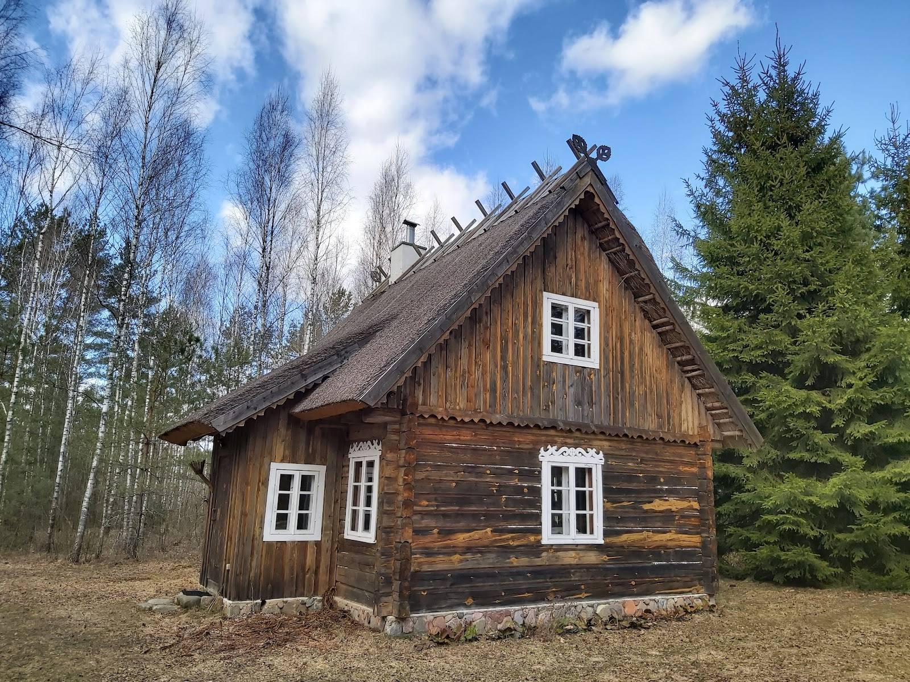

Sveikos gyvensenos sodyba Merkio upės aukštupyje, 35 km nuo Vilniaus.
Skambinkite arba rašykite, kad rezervuotumėteSodyba stovi senoje girioje prie Merkio vingio, toli nuo miesto triukšmo. Čia rasite dūminę, baltąją pirtį ir pirtį jurtoje, apiterapijos namelį ir tvenkinį su šaltiniais maudynėms.
Dėl nakvynės galima susitarti. Atvažiuoti galima ir su vaikais.
Pati autentiškiausia pirtis kokioje teko būti, norisi grįžti jau dabar.
Pačios nuoširdžiausios rekomendacijos!
Nuostabi vieta, ypač norintiems pabėgti nuo miesto triukšmo ir dulkių. Apsupta miško, žydinčių pievų ir Merkio vingio. Čia galima pailsinti sielą ir kūną ne tik gamtoje, bet ir pirtyse ar apiterapijos namelyje, kur raminančiai dūzgia bitės. Yra tvenkinys maudynėms, futbolo aikštė, poilsinės pavėsinės ir daug kitų smagių dalykų
Nustebino šeimininkų svetingumas. Nuostabiai malonūs žmonės. Norisi grįžti į tokią vietą tikrai. Jaučiausi kaip namuose. Labai jauki aplinka. :)
Vilkiškės, 17279 Šalčininkų r. sav.